7 - Ventes
-
1Introduction
-
2Parcellaire
-
3Exploitation
-
4Interface et accès
-
5Comptabilité
-
6Achats
-
7Ventes
-
8Stocks, tiers et RH
-
9Production
-
10Outils
-
11Performance
-
12Ekyviti
Dans ce chapitre, on vous explique :
Glossaire du chapitre

Deux méthodes vous permettent d'enregistrer des ventes dans Ekyagri : la première consiste à suivre les différentes étapes décrites dans ce chapitre, la seconde consiste à enregistrer une expédition, puis la facturer comme expliqué dans le chapitre 8 - Stocks, tiers et RH. Lorsque vous aurez pris en main l'application, choisissez celle qui vous convient le mieux. Notez cependant que le choix d'un type de vente n'est possible qu'avec la première méthode.
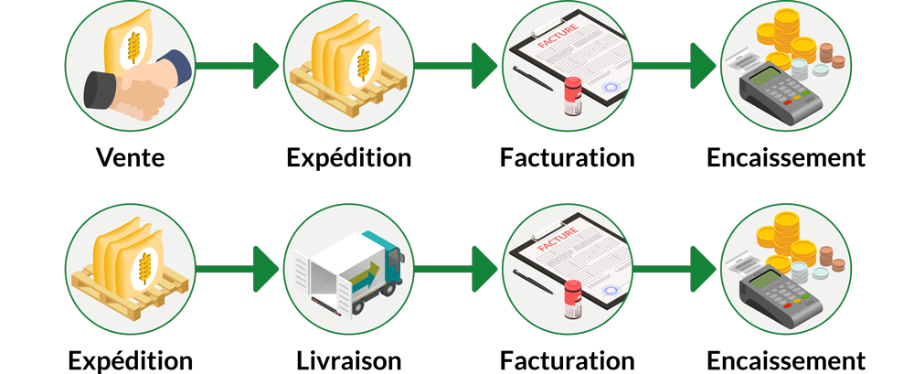

Toutes les factures émises à compter du 1er octobre 2019 doivent comporter deux mentions obligatoires supplémentaires. Il faut désormais mentionner non plus seulement l'adresse des parties (le siège social du vendeur et le siège social ou le domicile de l'acheteur), mais également l'adresse de facturation si elle est différente de celle du siège social. Il convient aussi d'ajouter le numéro de bon de commande lorsqu'il a été préalablement établi par l'acheteur. Ekyagri répond à ces nouvelles exigences.
Guide de prise en main • Ventes • Paramétrage
a - Paramétrage
configuration à faire pour
 et
et

Ce paramétrage optionnel vous permet d'activer ou non la répartition des ventes sur les activités et de définir les conditions de vente.
Guide de prise en main • Ventes • Paramétrage
1 – Procédure pour paramétrer la société
Le processus suivant vous guide pour configurer certaines préférences en rapport avec les ventes.

Cliquez sur le lien "Configuration" dans le "Menu principal" ou sur le bouton "Configuration" de la page d'accueil :

Dans la barre latérale du module, cliquez sur "Société" dans la section "Préférences" symbolisée par l'icône d'un personnage .
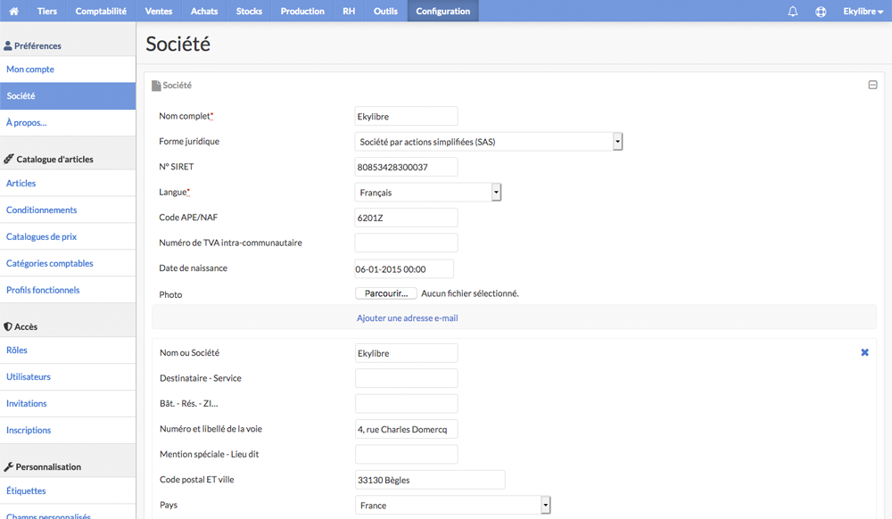

Pour personnaliser vos factures de ventes avec le logo ou un visuel de votre exploitation, cliquez sur le bouton "Parcourir…" à droite du libellé "Photo".
Sélectionnez une image ou un logo au format JPEG, PNG ou SVG (ce dernier type de format de fichier est à privilégier pour les logos vectoriels).
Cliquez sur Modifier pour valider l'opération.
Après enregistrement, le logo ou le visuel de votre exploitation est automatiquement affiché dans la fiche de la société et apparaîtra sur toutes vos factures de ventes au-dessus de votre adresse :
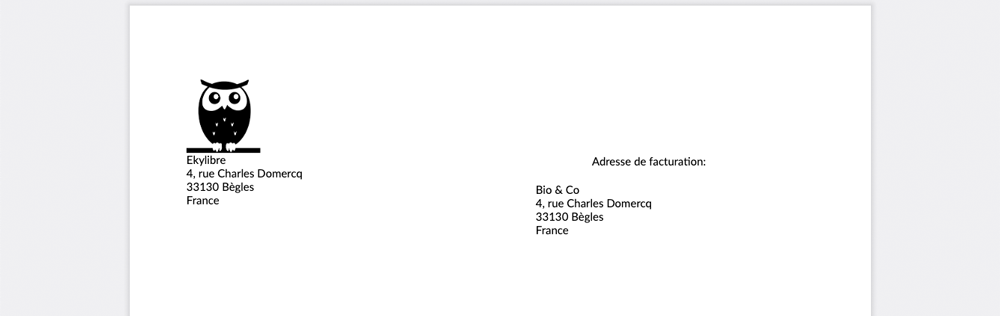

Dans la section "Préférences analytiques", cochez la case à droite de "Répartir les ventes et les achats sur les activités" pour rattacher, de manière facultative, les ventes aux différentes activités (la fonctionnalité n'est pas encore efficiente pour les équipes).
à droite de "Répartir les ventes et les achats sur les activités" pour rattacher, de manière facultative, les ventes aux différentes activités (la fonctionnalité n'est pas encore efficiente pour les équipes).
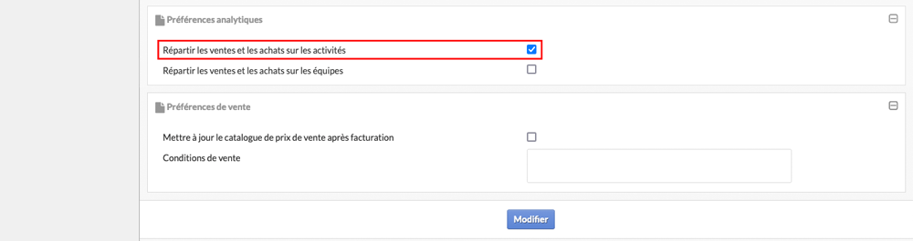
Lors de l'enregistrement d'une vente, une liste déroulante vous permettra de sélectionner une activité parmi celles ouvertes :
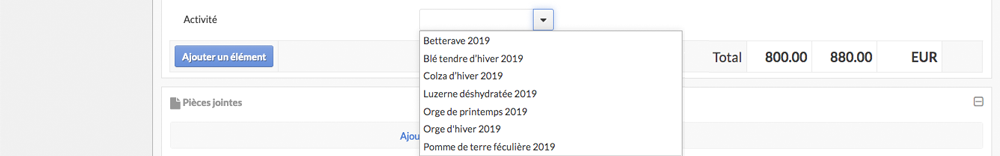
Cliquez sur Modifier pour valider l'opération.

Dans la section "Préférences de vente", cochez la case à droite de "Mettre à jour le catalogue de prix de vente après facturation" pour actualiser, sur demande, le prix d'un article dans un catalogue.
à droite de "Mettre à jour le catalogue de prix de vente après facturation" pour actualiser, sur demande, le prix d'un article dans un catalogue.
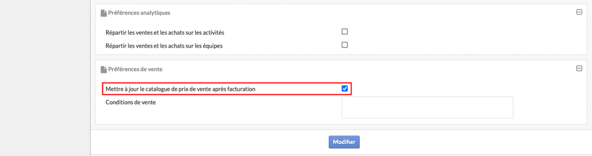
Cliquez sur Modifier pour valider l'opération.

Dans la section "Préférences de vente", renseignez le champ "Conditions de vente" pour faire apparaître la mention de votre choix sur les factures de ventes générées au format PDF.
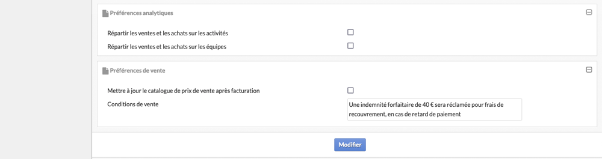
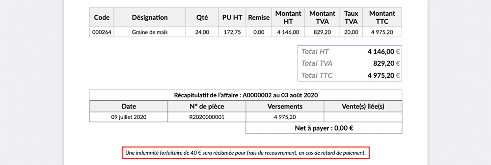
Cliquez sur Modifier pour valider l'opération.
Guide de prise en main • Ventes • TVA catégorie comptable
2 – Procédure pour configurer la liste des taxes
Ce paramétrage optionnel vous permet de restreindre la liste des taxes affichées pour simplifier la saisie d'une ligne de vente.
Le processus suivant vous guide pour assigner un ou plusieurs taux de TVA à la catégorie comptable d'un article.
Cliquez sur le lien "Configuration" dans le "Menu principal" ou sur le bouton "Configuration" de la page d'accueil :
Dans la barre latérale du module, cliquez sur "Articles" dans la section "Catalogue d'articles" symbolisée par l'icône d'un épi.
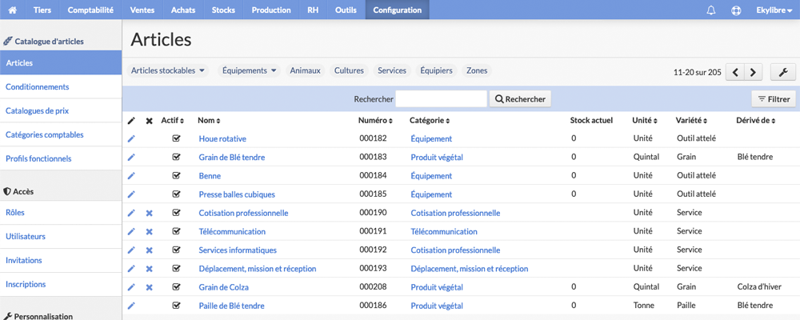
Dans la liste des article, cliquez sur la catégorie à paramétrer dans la colonne "Catégorie".
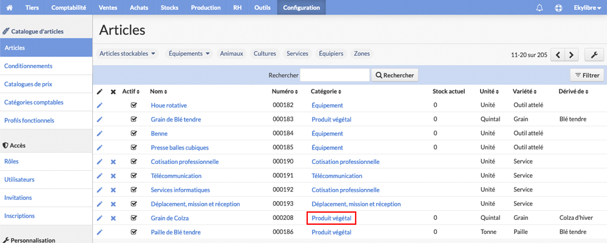
Cliquez ensuite sur le boutonen haut à gauche de la fenêtre principale.
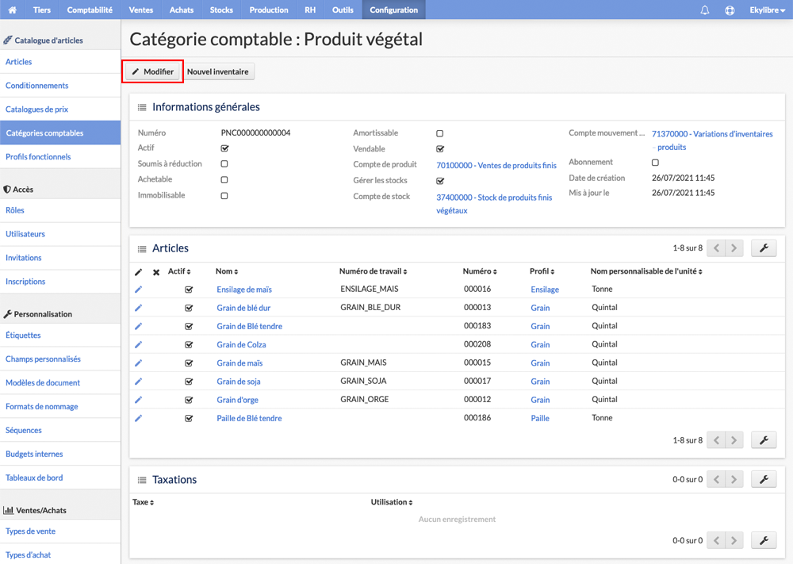
Dans la section "Ventes", cliquez sur "Ajouter une taxe de vente" et choisissez un taux de TVA parmi ceux qui sont disponibles.
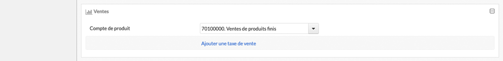
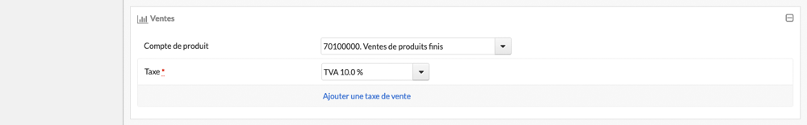
En fonction de vos débouchés, répétez cette opération pour ajouter un second taux de TVA, comme par exemple si une partie de la récolte de colza est destinée à l'alimentation et l'autre vendue pour produire du biocarburant.
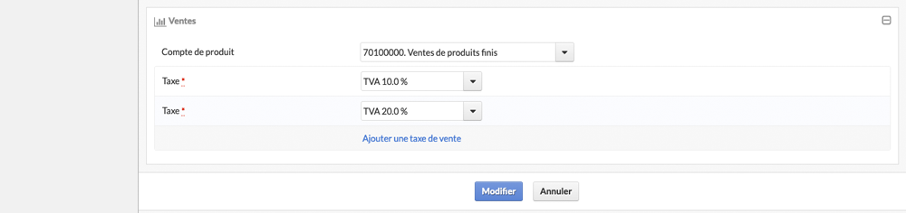
Cliquez sur Modifier pour valider l'opération.
La section "Taxations" de la catégorie comptable est automatiquement mise à jour avec les 2 taux de TVA sélectionnés.
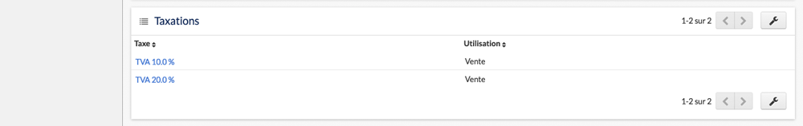
Par défaut, lors de la saisie d'une ligne de vente, aucun filtrage n'est réalisé et toutes les taxes actives et disponibles sont affichées :
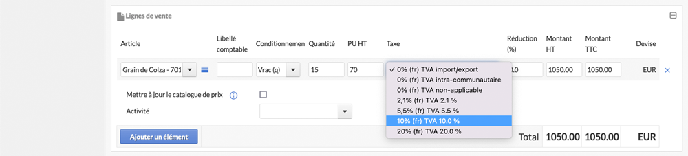
Après modification de la catégorie comptable de l'article, seuls les taux de TVA attribués sont proposés dans la liste déroulante des taxes :
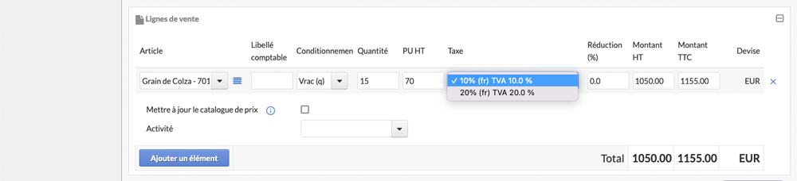
Notez que si un taux unique a été choisi lors de la modification, la saisie est sécurisée et permet d'éviter tout risque potentiel d'erreur de sélection de la TVA.
Cette taxe est automatiquement affectée à la recette d'un article dans le calcul du budget prévisionnel d'une activité, pour gérer la trésorerie en TTC et anticiper les liquidités disponibles.
Guide de prise en main • Ventes • Types de vente
b - Types de vente
configuration à faire pour

Si vous utilisez Ekyagri | Ekyviti pour réaliser la gestion commerciale et l'émission des factures de ventes, nous vous conseillons de paramétrer préalablement, si nécessaire, vos différents types de vente dans l'application.
Un type de vente par défaut ("Vente standard") est déjà configuré mais vous pouvez le modifier ou en créer de nouveaux en paramétrant les conditions de règlement, le mode d'encaissement et en choisissant le journal qui enregistrera l'ensemble des recettes dans le brouillard comptable.
Guide de prise en main • Ventes • Types de vente
1 – Procédure pour paramétrer un type de vente
Le processus suivant vous guide pour créer un nouveau type de vente.
Cliquez sur le lien "Configuration" dans le "Menu principal" ou sur le bouton "Configuration" de la page d'accueil :
Dans la barre latérale du module, cliquez sur "Types de vente" dans la section "Ventes/Achats" symbolisée par l'icône d'un histogramme.
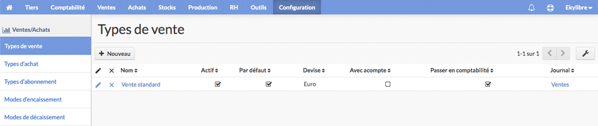
Tous les types de vente déjà créés ou mis à disposition sont listés ici.
Cliquez sur le bouton en haut à gauche de la fenêtre principale.
en haut à gauche de la fenêtre principale.
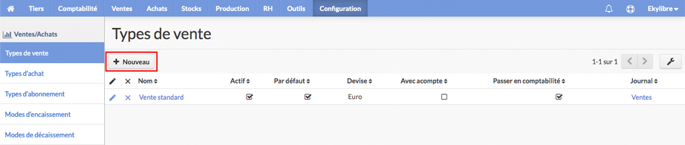
Nommez de façon explicite le nouveau type de vente et cochez la case pour l'activer. Cochez la case
pour l'activer. Cochez la case à droite de "Par défaut" si vous estimez que ce type de vente sera le plus fréquemment utilisé : il deviendra alors le bouton principal dans la fenêtre de création d'une nouvelle vente à la place de "Vente standard".
à droite de "Par défaut" si vous estimez que ce type de vente sera le plus fréquemment utilisé : il deviendra alors le bouton principal dans la fenêtre de création d'une nouvelle vente à la place de "Vente standard".
Notez que le "Délai d'expiration" est la durée de validité d'un devis (ce délai est fixé par défaut à 30 jours mais vous pouvez le modifier). Lors de la création d'une nouvelle vente, il est utilisé pour le calcul de la date d'expiration indiquée lors de l'impression d'un "Devis brouillon", d'un "Devis envoyé" ou d'une "Commande" au format PDF.
Dans la section comptabilité, sélectionnez le journal de votre choix : vous pouvez par exemple disposer d'un journal comptable pour les ventes réalisées en France et un second pour les ventes effectuées à l'étranger. Vous pouvez également sélectionner un journal créé pour rassembler les écritures issues d'achats et de ventes réalisés avec une même coopérative.
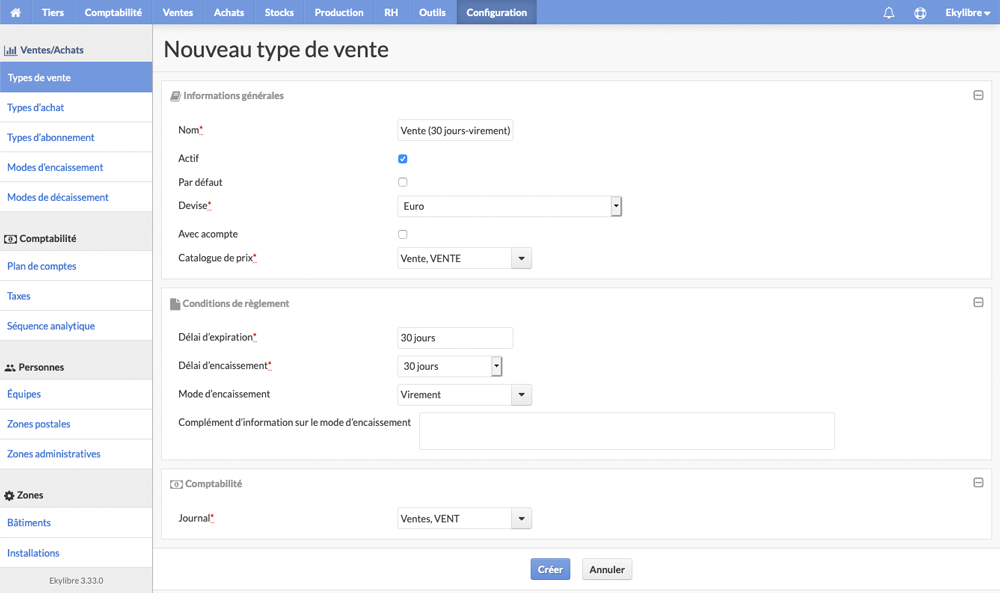
Cliquez sur Créer pour valider l'opération.
Vérifiez le récapitulatif des éléments définissant le nouveau type de vente. Vous pouvez le modifier le cas échéant.
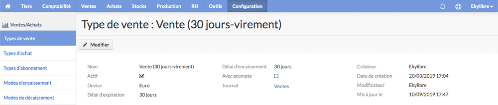
Pour des ventes au comptant et réglées en espèces ou par chèque, le récapitulatif diffèrera avec l'enregistrement des écritures dans le journal de vente avec un délai d'encaissement fixé à 0 jour :
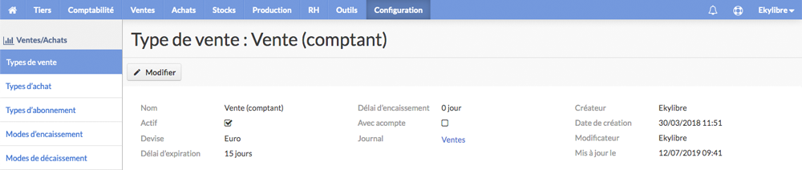
Guide de prise en main • Ventes • Introduction
c - Enregistrer une vente
procédure à savoir pour


Ce chapitre ne traite pas de la création des articles et des clients (vous pouvez cependant les ajouter à la volée). Référez-vous au chapitre 8 - Stocks, tiers et RH pour connaître les procédures à suivre concernant ces deux prérequis.
La gestion des ventes nécessite qu'un exercice comptable soit déjà ouvert à la date d'enregistrement d'une nouvelle vente, même si vous ne gérez pas votre comptabilité dans Ekyagri | Ekyviti. La procédure d'ouverture d'un exercice comptable est expliquée dans le chapitre 5 - Comptabilité.
Dans Ekyagri | Ekyviti, l'enregistrement d'une vente passe par plusieurs étapes successives qui commencent à partir de la création d'un "Devis brouillon". Ce devis (une fois envoyé et s'il est accepté) sera converti en "Commande" puis en "Facture" par vos soins en fonction de la conclusion ou non de la vente. L'écriture comptable d'une vente dans le brouillard des journaux concernés n'est enregistrée qu'à partir du moment où son statut a basculé sur "Facture".
Exemples de l'évolution du statut d'une vente :
Devis brouillon Abandonné
Devis brouillon Devis envoyé Devis refusé
Devis brouillon Devis envoyé Commande Facture
Devis brouillon Devis envoyé Facture
Devis brouillon Facture
En pratique, il n'est donc pas obligatoire de valider chaque étape de l'évolution du statut de la vente pour enregistrer une facture, notamment si vous n'adressez pas de devis à votre client.
Guide de prise en main • Ventes • Enregistrer une vente
1 – Procédure pour enregistrer une vente
Le processus suivant vous guide pour enregistrer une nouvelle vente.
Cliquez sur le lien "Ventes" dans le "Menu principal" ou sur le bouton "Ventes" de la page d'accueil :
Dans la barre latérale du module, cliquez sur "Ventes" dans la section "Ventes" symbolisée par l'icône d'un histogramme.
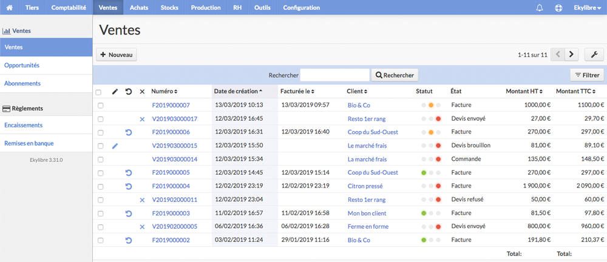
Toutes les ventes déjà enregistrées sont listées ici.
Plusieurs commandes présentes dans la liste sous la forme d'icônes sont à votre disposition (la présence ou l'absence de ces icônes dans une ligne vous renseigne sur la possibilité de réaliser ou non l'opération qui lui est associée) :
 permet de modifier une vente.
permet de modifier une vente.
permet de créer un avoir sur une facture.
 permet de supprimer une vente.
permet de supprimer une vente.
Des indicateurs en couleur caractérisent également le statut de chaque vente :
 signale une vente facturée et payée.
signale une vente facturée et payée.
 signale une vente dont l'encaissement ne correspond pas au montant de la facture.
signale une vente dont l'encaissement ne correspond pas au montant de la facture.
 signale un devis en cours/expiré/abandonné ou une facture impayée.
signale un devis en cours/expiré/abandonné ou une facture impayée.
Notez que la couleur de ces trois indicateurs n'est pas forcément liée au statut de la vente ("Devis brouillon", "Devis envoyé", "Devis refusé", "Commande", "Facture", "Abandonné") comme expliqué plus loin.
Cliquez sur le boutonen haut à gauche de la fenêtre principale…
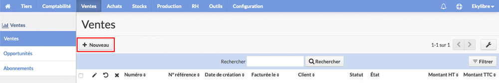
… ou sélectionnez un type de vente dans la liste déroulante, si vous en avez paramétré un ou plusieurs complémentaires à celui défini par défaut ("Vente standard").
Le choix d'un "Type de vente" parmi ceux qui ont été préalablement configurés permettra de générer une facture incluant les prix en vigueur du catalogue de vente rattaché au type de vente sélectionné.
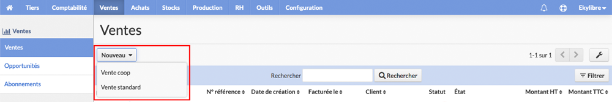
Notez que le type de vente associé à la création de la nouvelle vente n'est plus modifiable par la suite.
Sélectionnez un client dans la liste déroulante ou créez-en un nouveau à la volée.
Si vous souhaitez réaliser l'expédition d'une vente (une étape indispensable dans le processus de vente pour gérer vos stocks automatiquement) et pouvoir ensuite enregistrer une livraison des produits vendus, la saisie d'une adresse dans le champ "Adresse pour la livraison" est obligatoire. Enregistrez de préférence l'adresse du client lors de la création du tiers pour un remplissage automatique lors de futures ventes.
Cliquez sur Ajouter un élément pour créer une première ligne de vente.
Saisissez un mot-clef dans le champ "Article" pour filtrer les résultats affichés et choisissez le produit vendu. Sélectionnez un conditionnement, puis renseignez la quantité, le prix unitaire HT et le taux de TVA à appliquer.
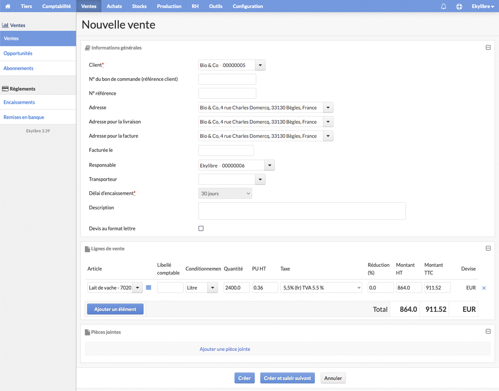
Si "Mettre à jour le catalogue de prix de vente après facturation" a été activé dans les « Préférences de vente » de la société, une option permet de mettre à jour ou non le montant saisi dans la ligne de vente. Cochez la case pour enregistrer le nouveau prix de l'article et actualiser le catalogue.
pour enregistrer le nouveau prix de l'article et actualiser le catalogue.
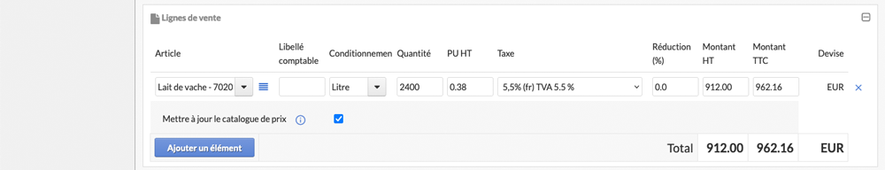
Notez que le délai d'encaissement affiché est celui qui est associé au type de vente sélectionné à l'étape no 2. Il ne peut pas être modifié lors de la saisie de la vente.
Choisissez un conditionnement ou créez-en un nouveau à la volée en sélectionnant "Ajouter un nouvel enregistrement" dans la liste déroulante "Conditionnement".
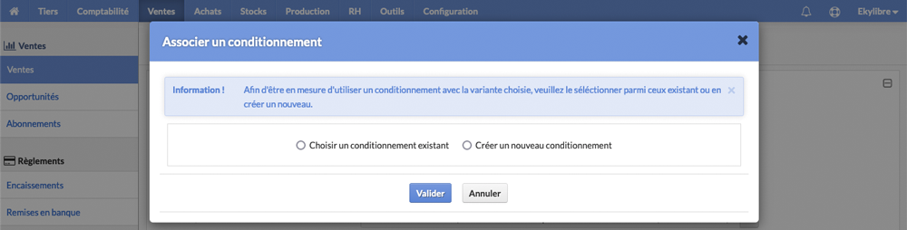
Notez que la saisie du prix unitaire est autorisée avec un maximum de 4 décimales, alors que celle des montants HT ou TTC est dynamiquement limitée à 2 chiffres après la virgule. Ces limitations sont fixées afin de prévenir les erreurs potentielles d'arrondi pouvant survenir lors du calcul automatique de la balance comptable.
Procédez de la même manière pour ajouter successivement de nouvelles lignes de vente avec les informations requises.
Pour ajouter d'éventuels frais de port, sélectionnez "Transport de biens et de personnel" dans la liste déroulante (l'article de référence et de nature "Services" doit être importé avant).
Cochez la case à droite de "Devis au format lettre" pour afficher des champs complémentaires dans le formulaire de saisie et personnaliser le devis.
à droite de "Devis au format lettre" pour afficher des champs complémentaires dans le formulaire de saisie et personnaliser le devis.
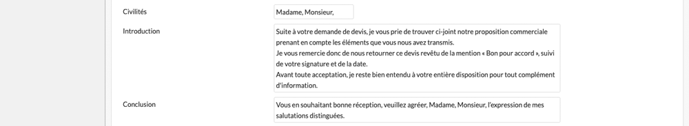
Cliquez sur le symbole, pour afficher un champ libre permettant d'insérer un commentaire à la ligne de vente. Cette mention apparaîtra lors de la génération de la facture au format PDF.
Notez que si vous avez activé la répartition des ventes dans les préférences analytiques des paramètres de la société, une liste déroulante vous permet de sélectionner une activité parmi celles ouvertes.
Cliquez sur Créer pour valider l'opération.
Lors de l'édition d'une facture à destination d'une coopérative, si le montant de la vente est défalqué par un approvisionnement, des prestations, des charges ou des taxes et que toutes les lignes doivent figurer dans le même document, ajoutez chaque élément complémentaire avec un montant (prix unitaire HT) négatif afin que la facture enregistrée dans l'application corresponde à la facture d'apport émise par l'acheteur. Notez que cette opération nécessite la création d'articles spécifiques pour une passage correct des écritures en comptabilité.
Chaque nouvel élément vendu une première fois enrichit le catalogue de prix "Vente" avec un enregistrement du prix saisi dans la ligne de vente. Lors de la création d'une nouvelle vente avec cette même variante, le prix de celle-ci est automatiquement renseigné à partir du catalogue. Ce prix reste modifiable directement dans le champ concerné ou dans le catalogue depuis la section "Produit" du module "Configuration". Notez que la saisie d'un prix différent dans une ligne de vente ne remplace pas celui déjà enregistré dans le catalogue.
La vente possède initialement un statut "Devis brouillon" tant que le devis n'a pas été accepté/refusé/abandonné ou qu'il n'a pas été transformé en "Commande" puis en "Facture". Déposez vos justificatifs (documents numérisés au format JPEG, fichiers PDF) par glisser-déposer ou en parcourant votre disque dur après avoir cliqué sur l'icône représentant un trombone.
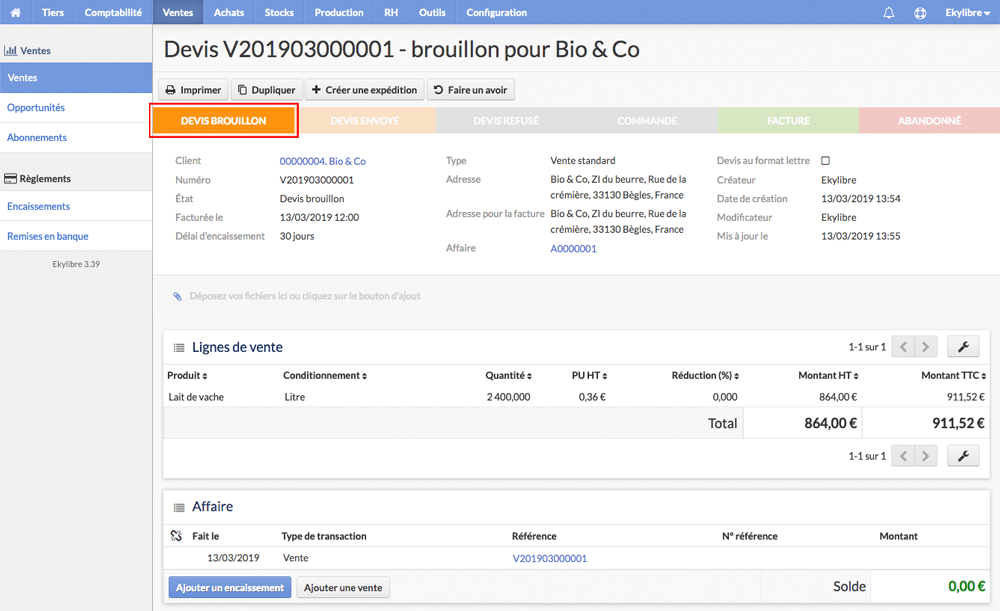
Cliquez sur le boutonpour revenir à l'étape précédente et modifier la vente (client, adresse, lignes de vente).
Notez que seul le "Devis brouillon" est modifiable. Pour rectifier un "Devis envoyé", il faut revenir au statut "Devis brouillon" en cliquant sur le bouton correspondant. Lorsque le devis sera transformé en "Facture", il ne sera plus possible de le corriger.
Devis envoyé Devis brouillonGuide de prise en main • Ventes • Transformer un devis en commande
2 – Procédure pour transformer un devis en commande
Le processus suivant vous guide pour transformer un devis en commande.
Cliquez sur le lien "Ventes" dans le "Menu principal" ou sur le bouton "Ventes" de la page d'accueil :
Dans la barre latérale du module, cliquez sur "Ventes" dans la section "Ventes" symbolisée par l'icône d'un histogramme.
Toutes les ventes déjà enregistrées sont listées ici.
Cliquez sur le numéro de la vente (encore avec le statut de devis) pour la transformer en commande.
Notez que les numéros sont précédés d'un "V" pour identifier un devis ou une commande et d'un "F" pour désigner une facture.
Modifiez le statut de la vente en cliquant successivement sur les étapes en couleur et en validant votre choix :
Devis brouillon Devis envoyé Commande
Utilisez les statuts Devis refusé (actif après l'envoi du devis) ou Abandonné pour annuler l'enregistrement de la vente.
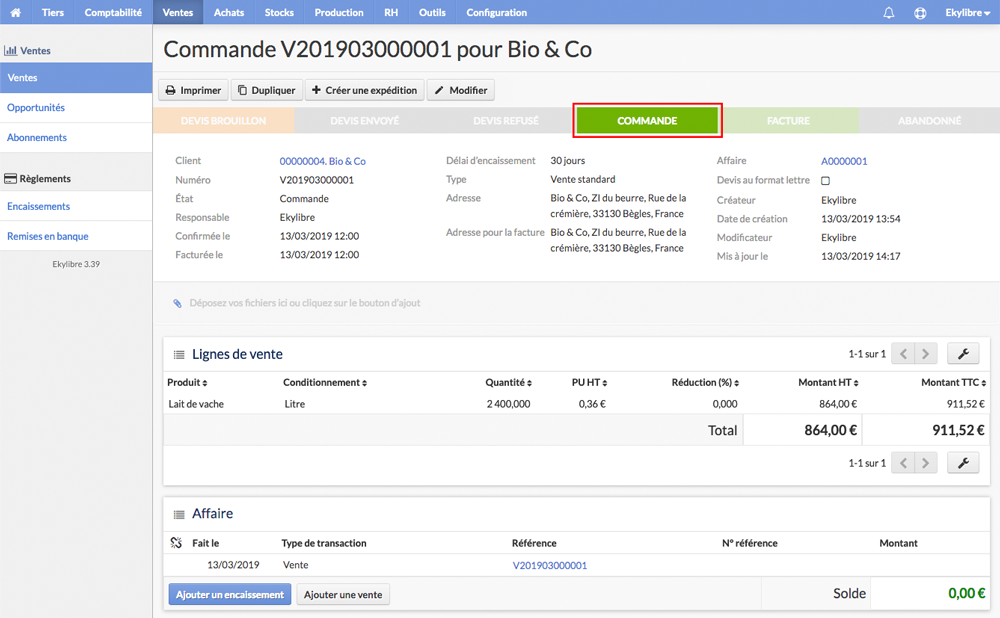
Notez que seul le "Devis brouillon" est modifiable. Pour rectifier une "Commande", il faut revenir au statut "Devis brouillon" en cliquant sur le bouton correspondant. Lorsque la commande sera transformée en "Facture", il ne sera plus possible de la corriger.
Commande Devis brouillonGuide de prise en main • Ventes • Transformer une commande en facture
d - Facturer une vente
Guide de prise en main • Ventes • Transformer une commande en facture
1 – Procédure pour transformer une commande en facture
Le processus suivant vous guide pour transformer une commande en facture.
Cliquez sur le lien "Ventes" dans le "Menu principal" ou sur le bouton "Ventes" de la page d'accueil :
Dans la barre latérale du module, cliquez sur "Ventes" dans la section "Ventes" symbolisée par l'icône d'un histogramme.
Toutes les ventes déjà enregistrées sont listées ici.
Cliquez ensuite sur le numéro de la vente (encore avec le statut de commande) pour la transformer en facture.
Cliquez sur le bouton Devis brouillon si vous devez modifier la vente avant de la passer en facture.
Modifiez le statut de la commande en cliquant sur le bouton Facture et en validant ce choix.
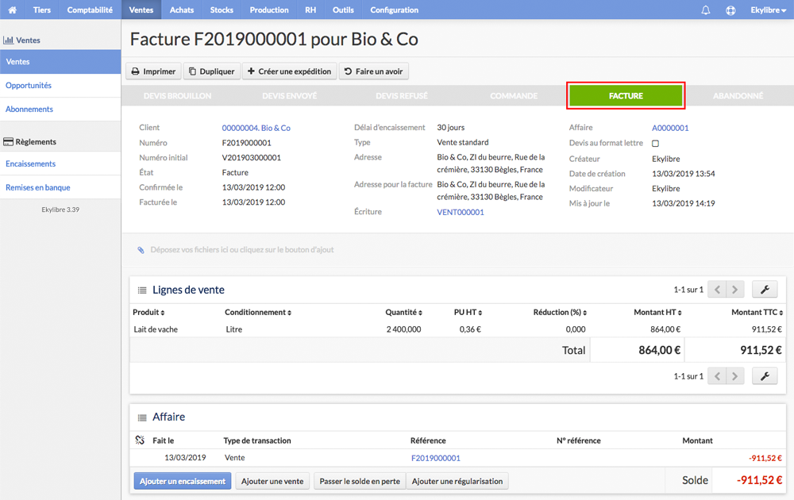
Notez que le solde négatif affiché en rouge dans la section "Affaire" (égal au montant total TTC de la facture) exprime une créance en attente de réglement.
Cliquez sur le bouton "Passer le solde en perte" si la créance est définitivement irrécouvrable. En cas d'erreur, cliquez sur l'icôneà gauche de "Écart sur vente" dans la section "Affaire" pour annuler l'opération.
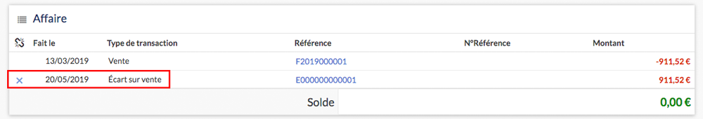
Guide de prise en main • Ventes • Expédier une vente
e - Expédier une vente
1 – Procédure pour expédier une vente
Si vous souhaitez réaliser la création d'une expédition (une étape indispensable dans le processus de vente pour gérer vos stocks automatiquement), les produits doivent être préalablement stockés à la suite de l'enregistrement d'une intervention, c'est-à-dire soit issus d'une production végétale ou animale (récolte, traite, ramassage d'œufs), soit appartenir à l'exploitation (animaux, engrais, semences, etc.).
Le processus suivant vous guide pour enregistrer l'expédition d'une vente.
Cliquez sur le lien "Ventes" dans le "Menu principal" ou sur le bouton "Ventes" de la page d'accueil :
Dans la barre latérale du module, cliquez sur "Ventes" dans la section "Ventes" symbolisée par l'icône d'un histogramme.
Toutes les ventes déjà enregistrées sont listées ici.
Cliquez sur le numéro d'une vente dont le statut est en "Commande" ou en "Facture" pour en afficher le détail, puis cliquez sur le bouton "Créer une expédition". Notez que ce bouton ne s'affiche que si vous avez saisi une adresse de livraison lors de la création de la vente.
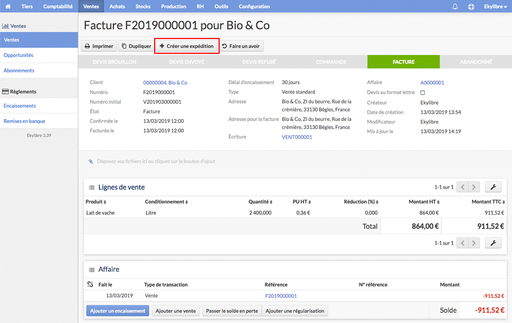
Saisissez les informations requises pour le définir correctement, avec les produits déjà stockés (ceux disponibles dans la liste déroulante) et avec les bonnes quantités. Notez que celles-ci peuvent différer de celles saisies dans la vente initiale si une expédition partielle est réalisée.
Dans la liste déroulante "Produit", ne pas utiliser le lien "Ajouter un nouvel enregistrement" car cela générerait la création d'une "Nouvelle matière" sans rapport avec les stocks existants et sans aucun lien avec la traçabilité comptable de la production végétale ou animale de l'exploitation.
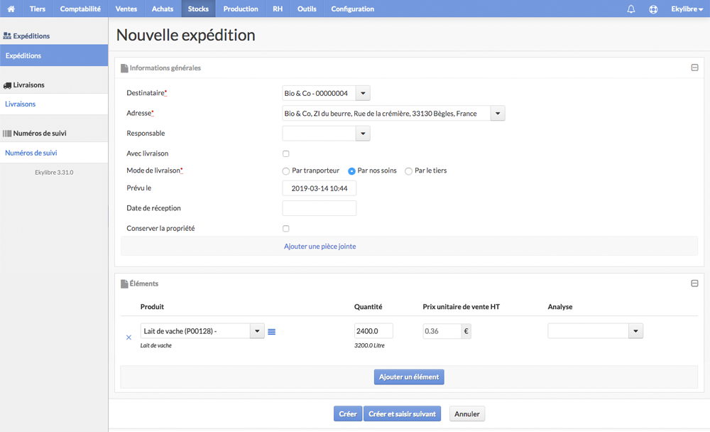
Cochez la case à droite de "Avec livraison" si une livraison du colis est envisagée et spécifiez le mode de livraison.
à droite de "Avec livraison" si une livraison du colis est envisagée et spécifiez le mode de livraison.
Cliquez sur Ajouter un élément si d'autre produits doivent être ajoutés à cette expédition.
Notez que la mention affichée en italique sous le libellé principal de la matière expédiée renseigne sur la quantité disponible en stock avant l'expédition et qu'il n'est pas possible de modifier le montant du prix unitaire de vente HT.
Cliquez sur Créer pour valider l'opération ou sur Créer et saisir suivant pour réaliser une nouvelle saisie.
L'application affiche maintenant la vente avec les informations de la nouvelle expédition associée à celle-ci, en bas de la fenêtre principale. Vous pouvez ajouter autant d'expéditions que nécessaire.
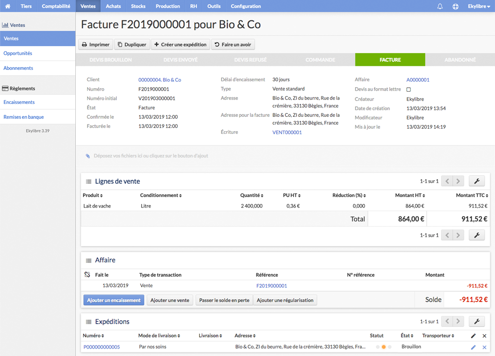
Guide de prise en main • Ventes • Réaliser un avoir
f - Réaliser un avoir
Un avoir est une facture d'annulation. Faire une facture d'avoir, c'est en fait annuler la part de chiffre d'affaires réalisée à l'occasion d'une précédente facture. Il est important de bien suivre vos avoirs pour ne pas vous retrouver dans la situation gênante de déclarer du chiffre d'affaires qui n'aurait pas généré de paiement, donc de trésorerie pour votre exploitation.
On peut aussi faire un avoir commercial pour résoudre un litige suite à un problème de livraison ou de qualité d'un produit ou d'une prestation jugée insuffisante. La marchandise a pourtant bien été livrée et facturée, mais vous jugez qu'à titre commercial, il est normal de diminuer le prix a posteriori pour garder de bonnes relations avec votre client. Vous établirez alors un avoir partiel du montant de la facture.
1 – Procédure pour réaliser un avoir
Le processus suivant vous guide pour réaliser un avoir sur une facture.
Cliquez sur le lien "Ventes" dans le "Menu principal" ou sur le bouton "Ventes" de la page d'accueil :
Dans la barre latérale du module, cliquez sur "Ventes" dans la section "Ventes" symbolisée par l'icône d'un histogramme.
Toutes les ventes déjà enregistrées sont listées ici.
Cliquez sur l'icôneen face du numéro de la facture choisie ou cliquez sur le bouton "Faire un avoir" dans la vue détaillée de la facture.
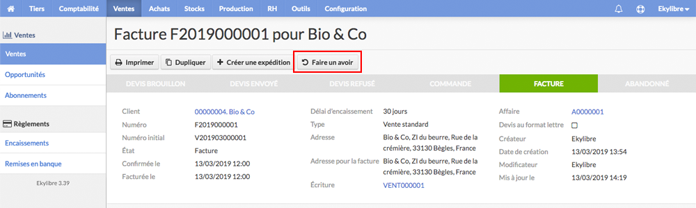
Saisissez soit une quantité, soit un montant HT, soit un montant TTC dans l'un des trois champs disponibles pour créer un avoir partiel ou total. Notez que si l'avoir est exprimé par un montant, celui-ci doit être renseigné avec une valeur négative.
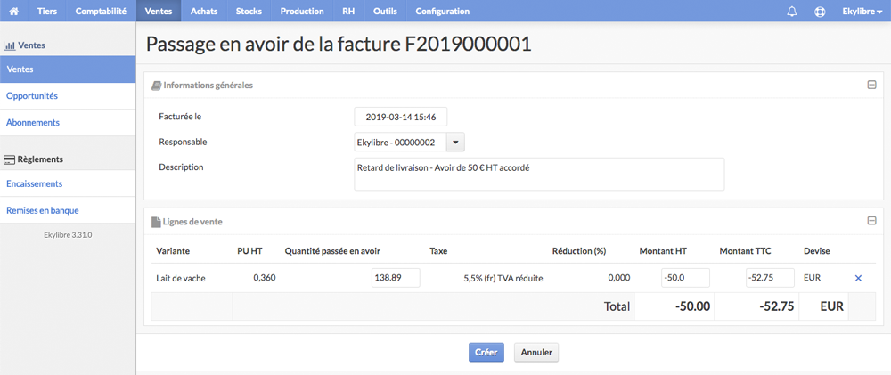
Cliquez sur Créer pour valider l'opération.
La nouvelle facture d'avoir est automatiquement générée et affichée par l'application avec les références de la facture initiale dans la section "Affaire".
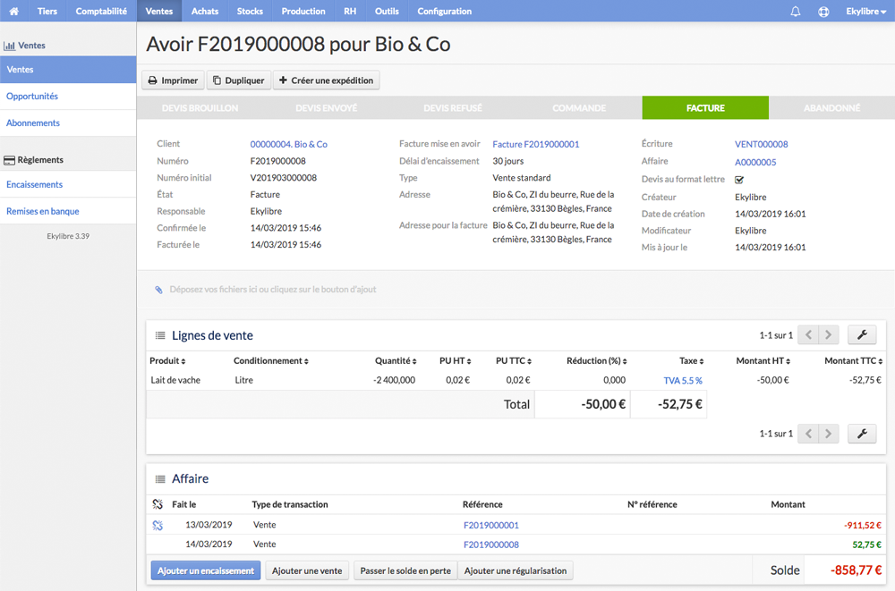
Affichez la vente concernée par l'avoir pour vérifier son écriture dans la section "Affaire" et pour constater la création d'un nouveau tableau des "Avoirs" en bas de la fenêtre principale.
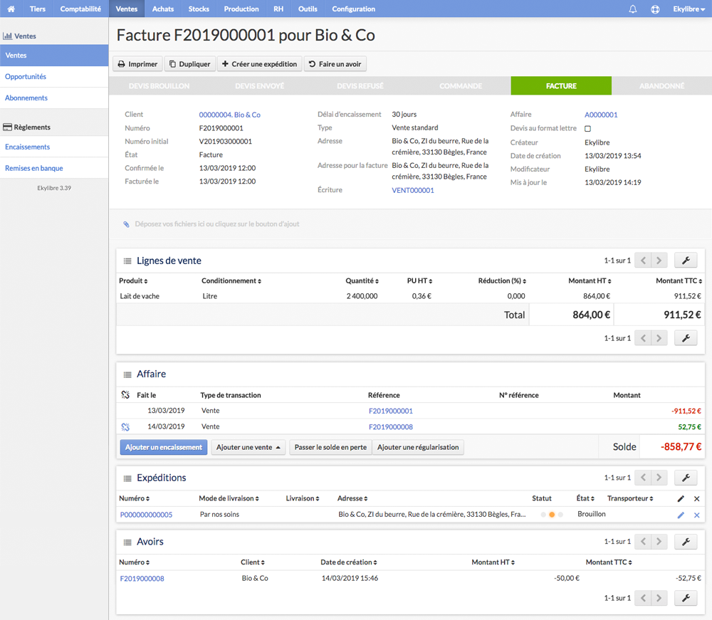
Guide de prise en main • Ventes • Créer une livraison
g - Enregistrer une livraison
Ekyagri et Ekyviti permettent de gérer certains aspects logistiques, notamment la livraison des commandes aux clients. On entend par "Livraison" le mouvement physique d'un ou de plusieurs colis sortants de l'exploitation (expéditions) avec une traçabilité dans les factures correspondantes. Les stocks de matières ne sont en aucun cas impactés par les livraisons de colis.
1 – Procédure pour créer une livraison
Le processus suivant vous guide pour réaliser la livraison d'une expédition.
Cliquez sur le lien "Stocks" dans le "Menu principal" ou sur le bouton "Stocks" de la page d'accueil :

Dans la barre latérale du module, cliquez sur "Livraisons" dans la section "Livraisons" symbolisée par l'icône d'un camion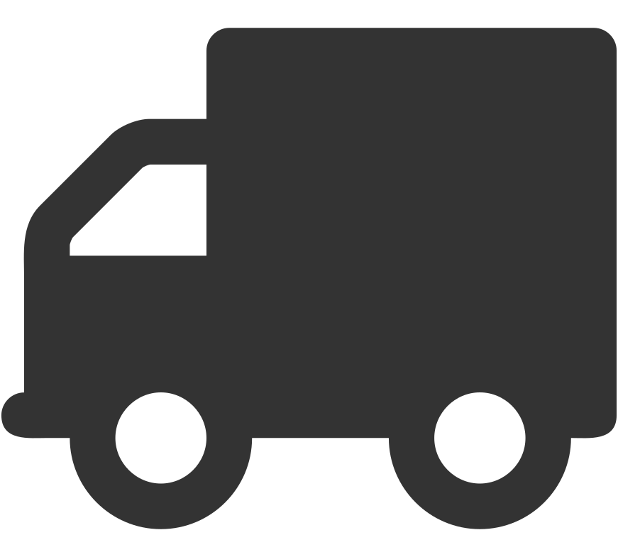.
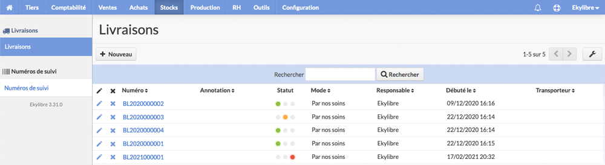
Toutes les livraisons déjà enregistrées sont listées ici.
Plusieurs commandes présentes dans la liste sous la forme d'icônes sont à votre disposition :
 permet de modifier une livraison.
permet de modifier une livraison.
 permet de supprimer une livraison.
permet de supprimer une livraison.
Des indicateurs en couleur caractérisent également le statut de chaque livraison :
 indique une livraison avec le statut "Terminée".
indique une livraison avec le statut "Terminée".
 indique une livraison avec le statut "Commandée", "En préparation", "Prête" ou "Commencée".
indique une livraison avec le statut "Commandée", "En préparation", "Prête" ou "Commencée".
 indique une livraison avec le statut "Brouillon".
indique une livraison avec le statut "Brouillon".
Vous ne pouvez pas créer de livraisons avec les colis souhaités tant que leur expédition n'a pas été enregistrée auparavant dans une "Vente".
Cliquez sur le boutonen haut à gauche de la fenêtre principale.
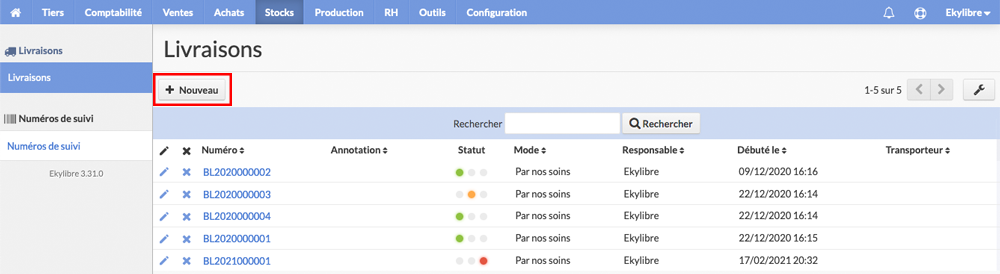
Sélectionnez un ou plusieurs colis à l'aide des cases à cocher pour procéder à une livraison unique ou groupée de plusieurs colis (ou pour organiser une tournée de livraison).
pour procéder à une livraison unique ou groupée de plusieurs colis (ou pour organiser une tournée de livraison).
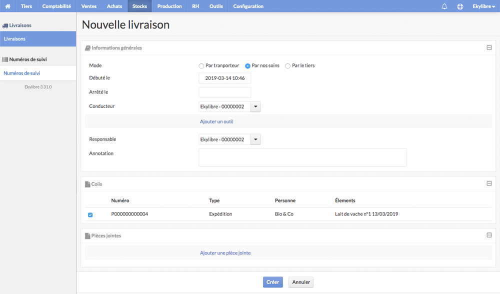
Cliquez sur Créer pour valider l'opération.
Une fois créée, la livraison prend le statut de "Brouillon" et va pouvoir évoluer en fonction de son avancement. Déposez vos justificatifs (documents numérisés au format JPEG, fichiers PDF) par glisser-déposer ou en parcourant votre disque dur après avoir cliqué sur l'icône représentant un trombone.
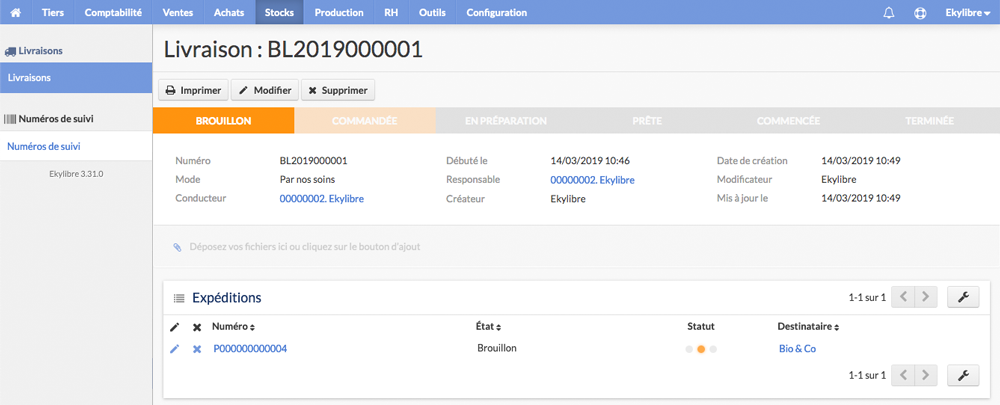
Modifiez le statut de la livraison en cliquant successivement sur les étapes en couleur :
Brouillon Commandée En préparation Prête Commencée Terminée
Validez chaque changement de statut dans la fenêtre modaleVoir glossaire prévue à cet effet :
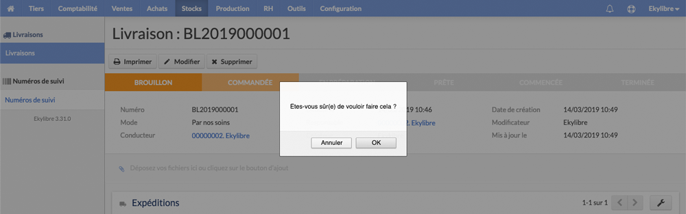
Notez qu'une fois confirmés, les statuts Prête et Terminée ne permettent plus de revenir à une étape précédente.
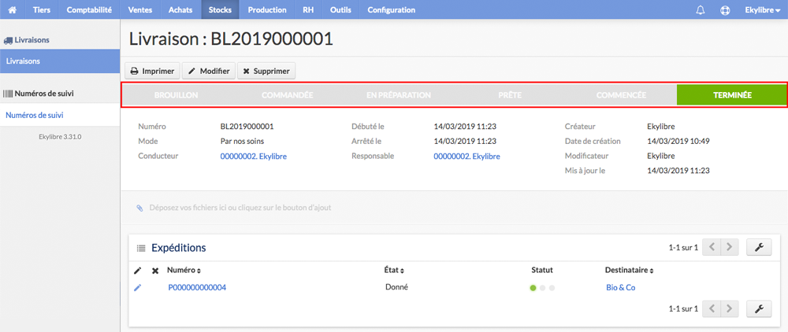
Cliquez sur le bouton pour générer un bon de livraison au format PDF.
pour générer un bon de livraison au format PDF.
Affichez la vente associée à la livraison pour vérifier que son enregistrement a bien été consigné dans la section "Expéditions".
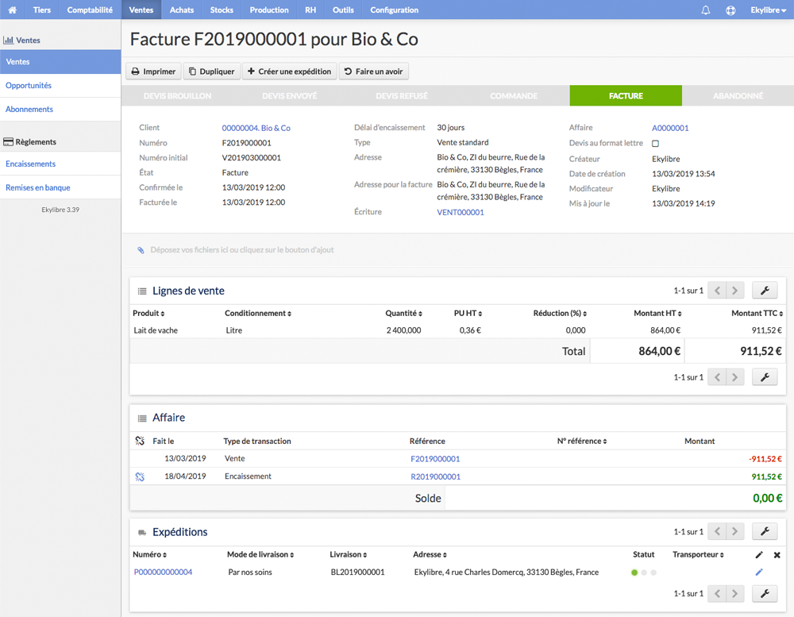
Guide de prise en main • Ventes • Encaissements
h - Réaliser un encaissement
Guide de prise en main • Ventes • Modes d'encaissement
1 – Procédure pour configurer un mode d'encaissement
Le processus suivant vous guide pour paramétrer un nouveau mode d'encaissement associé à une trésorerie.
Cliquez sur le lien "Configuration" dans le "Menu principal" ou sur le bouton "Configuration" de la page d'accueil :
Dans la barre latérale du module, cliquez sur "Modes d'encaissement" dans la section "Ventes/Achats" symbolisée par l'icône d'un histogramme.
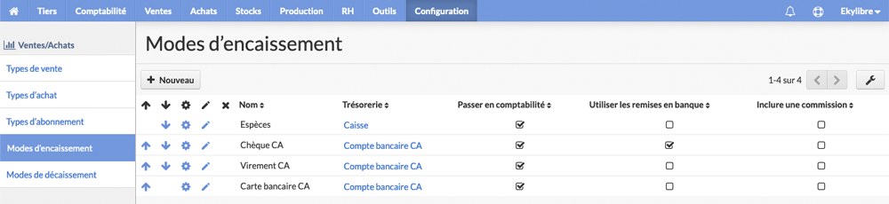
Tous les modes d'encaissement déjà configurés sont listés ici.
Cliquez sur le boutonen haut à gauche de la fenêtre principale.
Nommez le mode d'encaissement, puis sélectionnez une trésorerie existante dans la liste déroulante ou créez-en une nouvelle à la volée.
Assurez-vous que la case est bien cochée à droite du libellé "Passer en comptabilité", afin de générer et de consigner les nouvelles écritures dans la comptabilité.
est bien cochée à droite du libellé "Passer en comptabilité", afin de générer et de consigner les nouvelles écritures dans la comptabilité.
Cochez la case à droite du libellé "Utiliser les remises en banque" si cette option est envisagée pour déposer les chèques et créditer votre compte bancaire, puis renseignez les éléments comptables requis.
à droite du libellé "Utiliser les remises en banque" si cette option est envisagée pour déposer les chèques et créditer votre compte bancaire, puis renseignez les éléments comptables requis.
Cochez la case à droite de l'option "Inclure une commission" quand des frais d'opération CIP sont facturés par la banque lors des paiements par carte bancaire (commission interbancaire de paiement).
à droite de l'option "Inclure une commission" quand des frais d'opération CIP sont facturés par la banque lors des paiements par carte bancaire (commission interbancaire de paiement).
Cliquez sur Créer pour valider l'opération.
Guide de prise en main • Ventes • Réaliser un encaissement
2 – Procédure pour réaliser un encaissement
Le processus suivant vous guide pour réaliser un encaissement à partir d'une vente.
Cliquez sur le lien "Ventes" dans le "Menu principal" ou sur le bouton "Ventes" de la page d'accueil :
Dans la barre latérale du module, cliquez sur "Ventes" dans la section "Ventes" symbolisée par l'icône d'un histogrammepour afficher la liste des ventes.
Cliquez sur le numéro d'une vente possédant le statut de "Facture" pour en afficher le détail.
Cliquez ensuite sur le bouton Ajouter un encaissement situé dans la section "Affaire".
Sélectionnez le mode de paiement et la date d'encaissement. Notez que le montant affiché est directement issu du montant de l'affaire mais vous pouvez en saisir un différent dans le cas d'une facture payée partiellement. En option, le responsable désigné pour la remise en banque est soit l'administrateur de la ferme, soit un équipier disposant des droits requis (voir le chapitre 4 - Interface et accès).
Cliquez sur Créer pour valider l'opération.
Dans la section "Affaire", vérifiez que le montant de l'encaissement a bien été pris en compte. Notez que vous pouvez cumuler plusieurs encaisssements pour une même facture si cela s'avère nécessaire comme par exemple dans le cas d'un règlement échelonné en 3 ou 4 paiements.
Guide de prise en main • Ventes • Remises en banque
i - Enregistrer une remise en banque
1 – Procédure pour enregistrer une remise en banque
Le processus suivant vous guide pour enregistrer une remise en banque à partir d'un ou plusieurs encaissement(s) réalisé(s) par chèque.
Assurez-vous que la case à cocher est bien activée à droite du libellé "Utiliser les remises en banque" pour disposer de la fonctionnalité lors de la création de l'opération. Sélectionnez également un compte d'attente et un journal pour définir correctement le mode d'encaissement.
est bien activée à droite du libellé "Utiliser les remises en banque" pour disposer de la fonctionnalité lors de la création de l'opération. Sélectionnez également un compte d'attente et un journal pour définir correctement le mode d'encaissement.
Cliquez sur le lien "Ventes" dans le "Menu principal" ou sur le bouton "Ventes" de la page d'accueil :
Dans la barre latérale du module, cliquez sur "Remises en banque" dans la section "Règlements" symbolisée par l'icône d'une carte bancaire.
Si aucun encaissement n'est enregistré dans les affaires sous forme de chèque, vous êtes immédiatemment prévenu(e) qu'aucun règlement n'est à remettre en banque.
Cliquez sur le boutonen haut à gauche de la fenêtre principale.
Tous les encaissements par chèques enregistrés dans les affaires sont listés ici.
Sélectionnez un "Responsable" et une "Trésorerie" dans les "Informations générales" afin de paramétrer correctement l'opération.
Cochez une ou plusieurs case(s) à droite dans la colonne "À déposer" pour sélectionner un ou plusieurs encaissement(s) à remettre en banque.
à droite dans la colonne "À déposer" pour sélectionner un ou plusieurs encaissement(s) à remettre en banque.
Cliquez sur Créer pour valider l'opération.
La nouvelle remise en banque est alors automatiquement ajoutée à la liste des fonds déposés…
… avec un enregistrement des écritures comptables dans le brouillard du journal de banque.
Passez au chapitre suivant de ce guide.